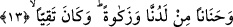

Fakir (Bursevî) der ki: Rahmete nâil olan bu ümmet içerisinde şeyh, ârif, muhakkık
Sehl b. Abdullah Tüsterî (k.s.)’un durumu, Yahya (a.s.) gibidir. Çünkü şeyhimden (Allah
ruhunu rahat ettirsin) duyduğuma göre o seyr ü sülûkünü üç yaşından başlayarak yedi
yaşının sonuna kadar tamamlamıştır. Yani üç yaşından yedi yaşına kadar onun için
inkişaf, ilhâm hâsıl olmuş ve tam bir hâl meydana gelmiştir. Sübhânellah! Bu onun
perdesinin latif olmasından dolayıdır. Perdesi kesif olanlar ise onu açmak için uzun süre
ağır mücâhedelere ihtiyaç duyarlar.
Bilesin ki, kâmil (olgun) bir kimsenin ruhu bedenine daha hızlı bağlanır. Yani
yaratıldığı nutfe (sperm) maddesi anne ve babasının sulbüne daha hızlı intikal eder ve
en güzel şekilde, en uygun zamanda doğum meydana gelir. O zaman da çocuğa vücûb
hükümleri galip olarak dünyaya gelir. Allâh’ıım, zulmânî ve nûrânî perdelerimizi açma
konusunda bize yardım et ve bizi rabbânî nurları keşfedenlerden eyle!
13. Katımızdan bir rahmet ve temizlik de verdik; o günahlardan korunan oldu.
“Katımızdan bir rahmet ve temizlik de verdik” Bu cümle, önceki âyette geçen “el-
hukme (hikmet)” kelimesi üzerine atıftır. “ ” kelimesinin tenvinli olarak gelmesi,
” kelimesinin tenvinli olarak gelmesi,
yüceltmek ve büyütmek içindir. Bu kelime, merhamet ve iştiyak duymak anlamına gelir.
Daha sonra şefkat ve merhamet için kullanılmıştır. Yâni kendi tarafımızdan ona büyük
bir rahmet verdik. Ya da kalbine acıma duygusu, anne-babasına ve başkalarına şefkat
duygusu verdik.”
“Ve temizlik de verdik.” Yani biz, onu günahlardan temizledik. İmam Râzî şöyle der:
Onun şefkati hiçbir görevi (vâcibi) ihlâl etmesine müsâade etmemiştir. Çünkü merhamet
bazen görevin (vâcibin) terk edilmesine sebep olur. Nitekim şu âyette bu durum
görülmektedir. “O zinâ edenlere karşı sizi acıma duygusu tutmasın...” (en-Nur, 24/2)
Buna göre âyetin anlamı şöyledir: “Biz o Yahya’da, -görevleri (vâcibleri) ihlâl
etmekten onu temizlemekle birlikte- anne-babasına ve diğer insanlara karşı merhameti
topladık. Veya onu Allah, anne-babasına bir sadaka olarak verdi. Yahut da onu insanlara
sadaka vermeye muvaffak kıldık, demektir.
“O günahlardan korunan oldu.” Yani Yahya (a.s.) itâatkâr, günahlardan kaçınan
birisi oldu. O ne hata yapar, ne de hataya niyetlenirdi.
14. O, ana babasına iyilik ediciydi, baş kaldıran bir zorba değildi.
“O, ana babasına iyilik ediciydi” Bu cümle önceki âyetteki “” kelimesi üzerine